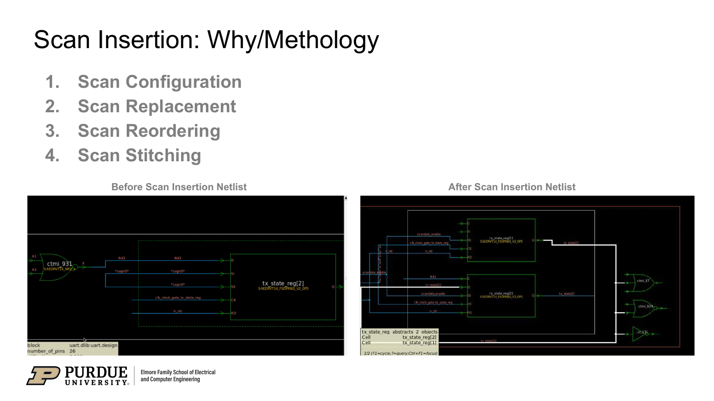
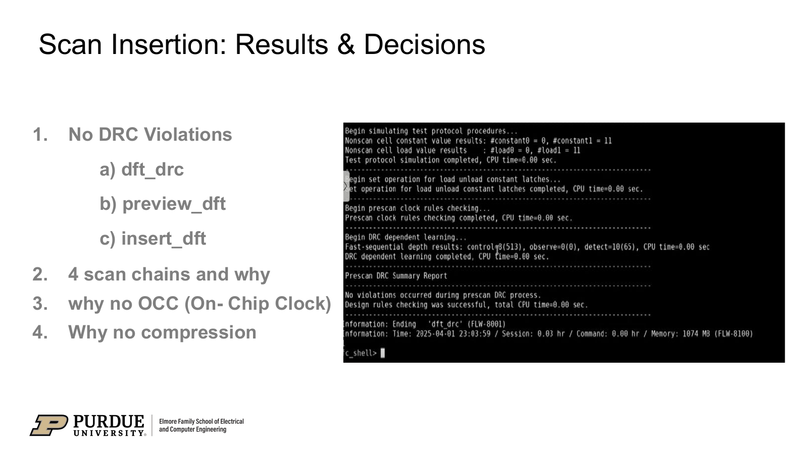
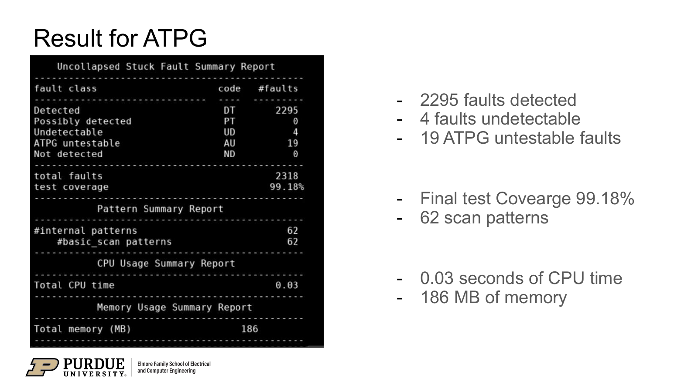

A UART demonstration of the DFT flow
Within the SoCET AFTx07 test-engineering team, I contributed to a flow that connects RTL synthesis, scan insertion, and stuck-at automatic test pattern generation (ATPG). The supplied presentation evaluates the flow on a UART block.
The objective was to establish a netlist and test flow, insert scan circuitry, check the integration, and generate test patterns. The reported block-level results provide evidence for that workflow; extending the flow across the larger design appears among the presentation’s next steps.

My contribution within the team
My work included customization of the Synopsys Fusion Compiler synthesis flow for the UART RTL, including constraints, optimization, technology mapping, and gate-level netlist export. I also contributed to scan insertion and the stuck-at ATPG workflow.
The scan work covers configuration, replacement, reordering, and stitching. The presentation reports four scan chains and no violations in the illustrated DFT design-rule checks. The ATPG stage then generates patterns and reports fault classifications and test coverage.

This was a collaborative project with Seongwon Hong, Raghav Srivaths, Benjamin Ryu, and Milen Manoj, mentored by Dr. Mark Johnson and Abinands Ramshanker. The reported coverage is a team result for the evaluated UART block.

The rule checks and ATPG report serve different purposes: the former checks compatibility with the test protocol, while the latter measures how the generated patterns exercise the fault model. Keeping both makes the path from netlist preparation to coverage visible.
Scan and ATPG results
| Reported measure | Result |
|---|---|
| Scan chains | 4 |
| Reported DFT DRC violations | 0 |
| Generated scan patterns | 62 |
| Stuck-at test coverage | 99.18% |
| Detected faults | 2,295 |
| Undetectable faults | 4 |
| ATPG-untestable faults | 19 |

The documented next steps were to extend DFT integration across the design, optimize the scan-chain configuration, and consider on-chip clock control and test compression if needed.